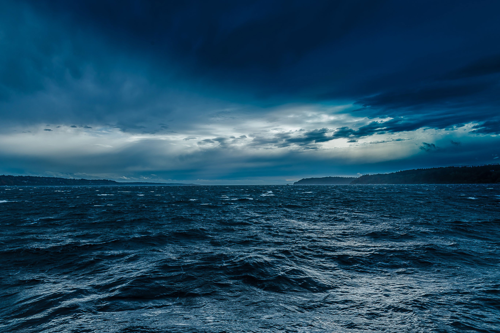

Hydrosphere
Learn about Earth's hydrosphere — its composition, movements, and essential role in supporting and regulating life across the planet.
The Components of Earth's Hydrosphere
The Earth's hydrosphere includes all water found on, under, and over the surface of the planet. This vast system involves oceans, rivers, lakes, glaciers, groundwater, and water vapor in the atmosphere, playing a crucial role in shaping the Earth's climate and supporting life.
Importance of the Hydrosphere
The hydrosphere regulates temperature, shapes weather patterns, transports nutrients, and sustains ecosystems. Water is essential for all known forms of life, influencing biological, chemical, and geological processes worldwide.
Hydrosphere Composition and Structure
The hydrosphere is dominated by saltwater (about 97% in oceans) and only 3% freshwater, mostly locked in glaciers and ice caps. It is interconnected through the water cycle — processes like evaporation, condensation, precipitation, infiltration, and runoff move water across different reservoirs.
Oceans
Oceans hold the majority of Earth's water, influence weather and climate, and support a vast range of marine life.

Glaciers and Ice Caps
These store the largest amount of Earth's freshwater and help regulate sea levels and global temperatures.
{kind=link}
Rivers and Lakes
Freshwater ecosystems like rivers and lakes are vital for drinking water, agriculture, and supporting diverse wildlife.
{kind=link}
Groundwater
Stored in underground aquifers, groundwater is a crucial freshwater resource for agriculture and human consumption.
{kind=link}
Water Vapor
Water vapor in the atmosphere is essential for weather systems and helps trap heat to maintain Earth's temperature.
{kind=link}
The Future of Earth's Hydrosphere
Human activities such as pollution, overuse of water resources, and climate change are threatening the balance of the hydrosphere. Melting glaciers, rising sea levels, and water scarcity are pressing global issues. Protecting water resources and promoting sustainable practices are vital for the future of Earth's ecosystems and human societies.